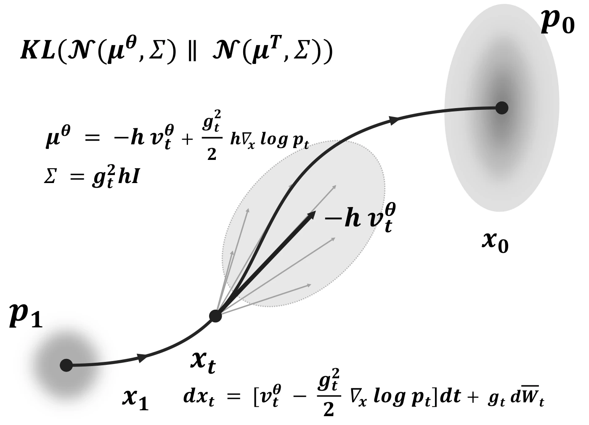
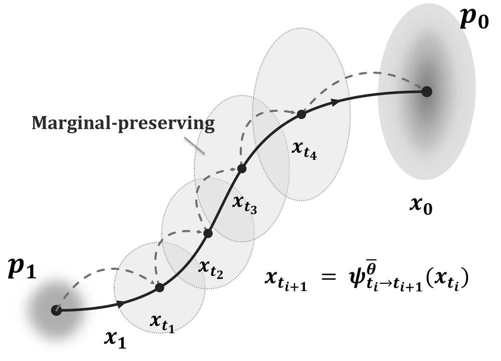
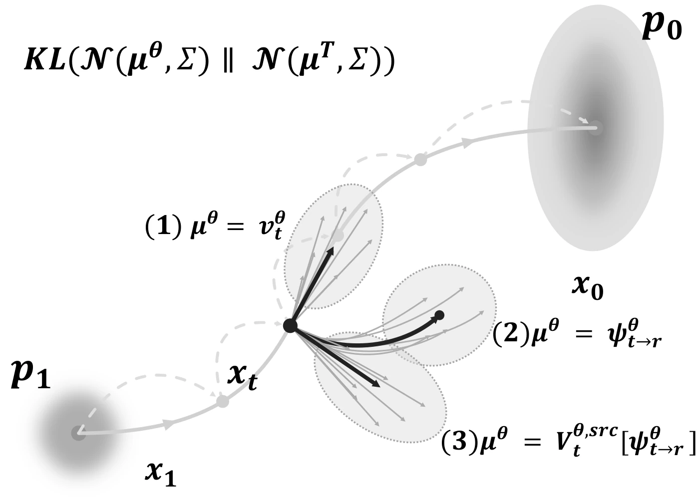
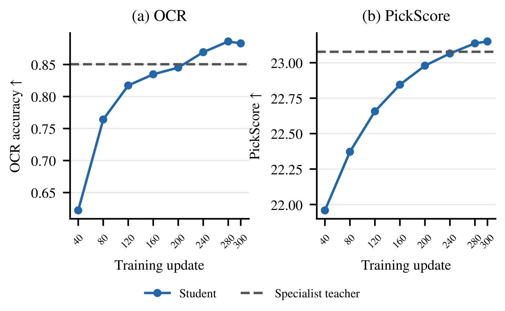
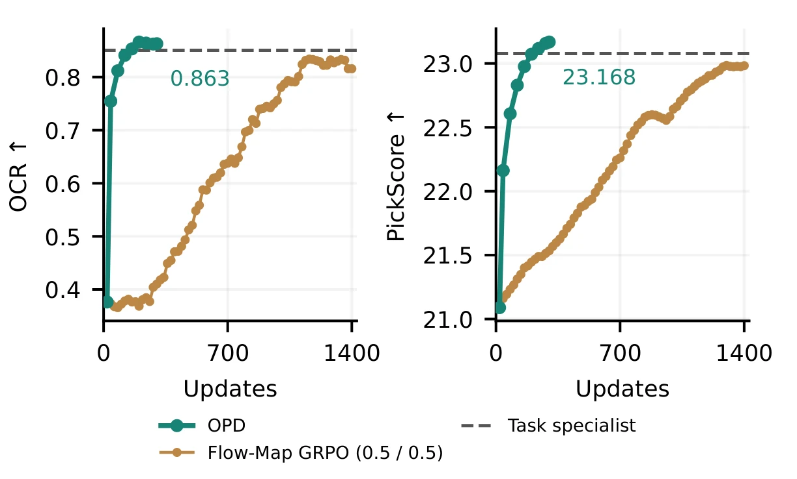
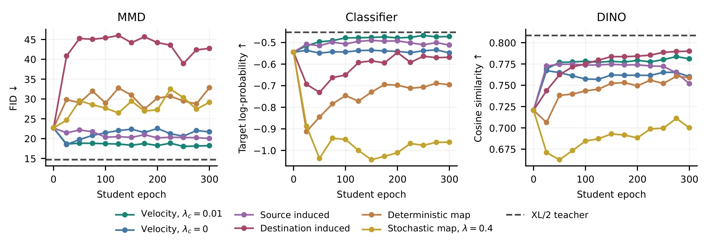

Abstract
Few-step flow-map generators, including MeanFlow and consistency models, enable efficient sampling through long-range transport, yet their on-policy distillation remains underexplored. We introduce FlowMap-OPD, an on-policy distillation framework that separates student-state acquisition from teacher–student distribution comparison. A formulation based on state marginals establishes this separation, while flow–velocity consistency connects local supervision to the deployed long-range map. Within this framework, we develop flow-map, induced-velocity, and instantaneous-velocity distribution supervision, each paired with a separately specified native flow-map rollout. Cross-capacity ImageNet experiments across three teacher rewards identify instantaneous-velocity distribution supervision with independently tunable student consistency as the most effective choice. In text-to-image experiments, FlowMap-OPD demonstrates strong multi-specialist consolidation capabilities and surpasses multi-reward Flow-Map GRPO in task performance and convergence speed.
Qualitative Comparison
The base model, the three specialist teachers and the FlowMap-OPD student, with the same prompt, initial noise and few-step sampler. Choose a task and an example.
Examples from the paper's appendix (student with \(\lambda_c=0\)); the scores under Results use \(\lambda_c=0.001\). The specialist for the selected task and the student are shown in bold, the student also with a blue outline. Click an image to enlarge.
Method



From local-transition OPD to few-step flow-map OPD. (1) Flow/diffusion OPD uses the same local SDE transitions for rollout and teacher–student comparison. (2) FlowMap-OPD collects states with long-range map rollouts \(x_{t_{i+1}}=\psi^\theta_{t_i\to t_{i+1}}(x_{t_i})\). (3) Independently of the rollout, optimization compares teacher and student through \(\mathrm{KL}(\mathcal N(\mu^\theta,\Sigma)\,\|\,\mathcal N(\mu^T,\Sigma))\), with means built from instantaneous velocities, flow maps or induced velocities.
Rollout–kernel separation
On-policy distillation compares teacher and student at states that the student itself visits. FlowMap-OPD rewrites the additive local objective as teacher–student comparisons over the joint distribution of student-generated states and comparison times. For a fixed local comparison and time weighting, the expected objective depends on these state marginals and comparison-time distributions, not on the full cross-time coupling of the rollout. This separates two roles: the rollout provides training states, and a compatible optimization kernel defines the teacher–student comparison at those states.
Supervision through a different representation
The student collects states with its native few-step flow map. At those states, FlowMap-OPD supports flow-map, induced-velocity and instantaneous-velocity distribution supervision. Flow–velocity consistency connects local velocity supervision to the long-range map used for generation, and its weight \(\lambda_c\) is set independently of teacher matching. Instantaneous-velocity supervision with separately tunable consistency is the most effective choice in our experiments.
Results
Multi-specialist consolidation
Three specialist teachers for GenEval, OCR and PickScore, each post-trained with Flow-Map GRPO, are distilled into one five-step MeanFlow student built on FLUX.1-lite. After 300 updates with instantaneous-velocity supervision (\(\lambda_c=0.001\)), the single student exceeds every specialist on its own benchmark, with the same number of sampling steps.
Table 1. Three specialist teachers distilled into one five-step student (higher is better).
| Model | GenEval | OCR | PickScore |
|---|---|---|---|
| Base | 0.5041 | 0.3491 | 20.9758 |
| GenEval teacher | 0.8454 | – | – |
| OCR teacher | – | 0.8504 | – |
| PickScore teacher | – | – | 23.0772 |
| FlowMap-OPD (one student) | 0.8580 | 0.8830 | 23.1502 |

Comparison with mixed-reward Flow-Map GRPO
Given OCR and PickScore specialists, we compare two-teacher OPD with optimizing both rewards directly through multi-reward Flow-Map GRPO, using the same MeanFlow backbone, prompt mixture and five-step rollouts. OPD reaches OCR 0.8629 and PickScore 23.1677 at update 300, while GRPO reaches 0.8158 and 22.9825 at update 1,400. OPD already exceeds these GRPO scores at update 200.

Cross-capacity transfer on ImageNet
We distill XL/2 teachers into B/2 students under three teacher rewards and compare twelve supervision configurations for each. Instantaneous-velocity supervision with \(\lambda_c=0.01\) is the most effective overall; under the MMD reward it reduces four-step FID from 22.68 to 18.23.

BibTeX
@article{li2026flowmapopd,
title = {FlowMap-OPD: Rollout--Kernel Separation for On-Policy Distillation of Few-Step Flow-Map Generators},
author = {Li, Zhiqi and Zhu, Bo},
journal = {arXiv preprint arXiv:2609.37851},
year = {2026}
}